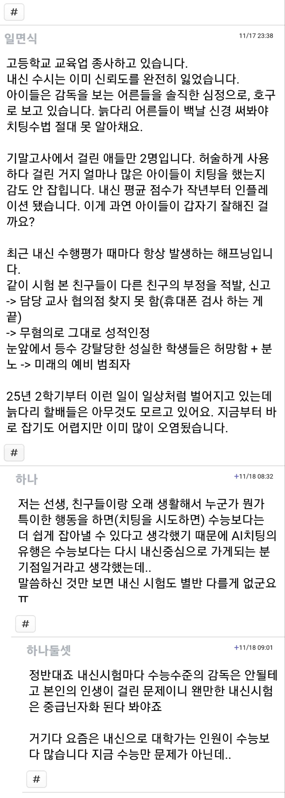

25년 2학기부터 내신 수시 신뢰도가 박살났다는 교육계 종사자ㄷㄷ
댓글
족보로 꿀 빤놈들 옆에서 보고 어이가 없었는데 이제는 ai로 더 심화된 상황
부정이 뭔지 말해줘야지. 학교에서 성적관련은 엄청민감한 사항이라 대충해결못함
교육이 무너지면
미래가 무너진다
저 사람 고등학교 교육업 종사자 절대 아님ㅋㅋㅋㅋ점수 뻠핑은 5등급제로 바뀌어서 일어난 현상임ㅋㅋㅋㅋ
교육업계 종사자일 수도 있지
선생들이 점수말하는 점수뻠삥은 학교 평균이 올라가는거일테니까
5등급제는 ai 때문이 아니라 필연적으로 평균이 높아질 수밖에 읎다..수능에 안들어가는 과목이 많아서 학업 부담 줄이려고 난이도 낮추기도 하고, 원점수 반영하는 대학도 있어서 일부러 난이도 낮추기도 함. 이거 얘기 나온지 2년 넘은 거라 교육업계 종사자면 모를 수가 없는 내용임..
아니 그런거 말고
그래도 필수과목들은 있잖아 국영수 필수과목들, 예를 들어 옛날 수1,2 내용들 쪽은 여전히 전교생 필수 과목인데 거기는 크게 안바뀌었어
2년가지고 시험이 미친듯이 바뀌냐 선생들 내는 문제 레퍼토리가 있는데
내용이 바뀌었다는 게 아니라, 5등급제에서는 어렵게 내는 게 입시에 불리하게 작용할 수 있다는 뜻이야. 예를 들어 공통수학 과목에서 1등급인데 70점인 학생이(문제를 어렵게 내는 학교) 입시에서 1등급 90점(A) 맞은 학생보다 불리하단 뜻(모든 대학 일괄 적용은 아니지만..)이여
전략적으로 내신을 쉽게 내고 있어
아오 ... 너 업계 종사한지 얼마 안돼서 신났냐?
학교에서 데이터 쌓인 고난도 문제들이 쉽게 돌파당하니까 의심한다는거 아니야 아오 ㅋㅋ 진짜
난 11년차고 학교에서 담당 업무 맡고 있지만 네 말이 맞다..설득이 불가능한 사람은 이길 수 없지..네 말이 맞음ㅇㅇ
학교에서 데이터 쌓인 고난도 문제ㅎㅎㅎㅎ
진짜 궁금한 게 왜 이 분야에 대해 알지도 않고 평소에 관심도 없었는데 우기는 거임?? 내가 욕하고 자존심 깎는 댓글을 단 것도 아닌데 네가 먼저 단 거잖아. 진짜 ㅈㄴ신기함..
야 뭐 전략적으로 학교가 시험 쉽게 낸다 하는데 쟤네 학교가 전략적으로 다 시험 쉽게냈냐?
그리고 시험 점수 변동 폭이 문제를 조금 쉽게 냈다 하면 적당한 폭 안에서 오르는게 아니라 갑자기 확 오른다거나
변별력이 있어야 하는 극 하위권 구간 아이들이 점수 상승이 심하다던가
경우의 수는 존나 많고 저 사람은 자기가 갖고 있는 데이터 내에서 충분히 말할 수 있다는거지
니가 말한 전반적인 학교에서 실제 점수 자체가 오르는 현상이 틀렸다고 함?
사람이 뭘 말하는지는 똑바로 듣고 답변을 하던가 자꾸 뭐라는거야 니 말 부정한적도 없어
" 관심도 없었는데 우기는 거임?? 내가 욕하고 자존심 깎는 댓글을 단 것도 아닌데 네가 먼저 단 거잖아. 진짜 ㅈㄴ신기함"
이게 내 첫 댓글 "교육업계 종사자일 수도 있지. 선생들이 점수말하는 점수뻠삥은 학교 평균이 올라가는거일테니까" 에서 나올법한 이야기냐?
아휴 ... 교사들 진짜 평소에 학생 가르친답시고 지말만 맞다 우기는 거 지겹고 지겹던데 시야 좁은건 하여간 ...
ㅈㄴ 궁금하네 11년차 뭐길래 꺼드럭을 뒤지게 대는걸까
선생은 맞냐? 말하는 게 선생 아닌거 같은데 ㅋㅋ?
08학번인데 대학교때 커닝 하는애들 짜증났긴했지 ㅋㅋ 어차피 지잡대라 학과랑 상관없는 일 하고 있지만서도 성적장학금 받아가는애들도 죄다 커닝시티새끼들 ㅋㅋ
대학생때 군대 다녀오니 학교가 부속 전문대랑 통합해서 전문대애들이랑 교수들이 대거 4년제로 넘어옴. 첫학기 중간고사 시즌에 편입한 애들이 대거 투명 셀로판지에 컨닝지 만들어왔는데 전문대 교수가 지네애들 편의 봐준다고 대놓고 나 지금 딴데 볼게 이지랄 하면서 묵인하더라. 사진 찍새 출신의 허접한 강사놈이 무슨 광고학 교수랍시고 거들먹 대더니 성실하게 공부해간 애들 다 B로 만들고 지네 애들은 대거 A 로 올리데? 그때 개열받아서 바로 교환학생 준비해 이듬해 유학가고 그 때 경험 덕분에 몇 년 잘 벌어먹고 살았다. 이 나라는 수단만 바꼈을 뿐이지 애초에 비슷한 놈들 천지야